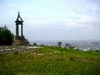
Cervolix, c'est sur le plateau de Gergovie. Tout le monde sait où c'est, Gergovie (pas Alésia), c'est près de Clermont-Ferrand, sur un site magnifique qui domine la ville et la plaine de la Limagne...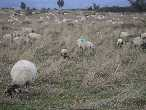
A l'arrivée : des moutons, plein de moutons, on marche dans les moutons (et pas seulement) ! Et aussi un âne, qui se manifestera face aux camping-cars à bout portant le matin vers 7 h...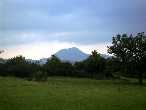
Une corniche entoure le bout du plateau. Dans l'intérieur, vers le haut, les terrains de vol s'étagent, affectés en théorie aux différentes catégories, mais en fait chacun se met au hasard, les gros en haut, près de l'arrivée du public.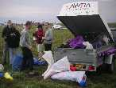
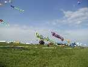
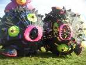
Et ils en ont : des Fugus jumeaux, à moins que ce ne soit un couple, à le voir se faire des mamours toute la journée...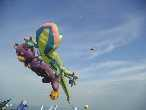
Ils ont aussi amené le nounours habituel qui plaît toujours aux enfants et un grand Gecko...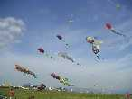
Mais ils ne sont pas seuls et seront vite bien entourés...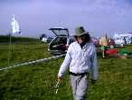
Marco a débarqué avec sa sirène toujours aussi tentatrice...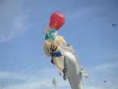
Mais aussi avec un redoutable Neptune barbu et armé de son trident, et un dauphin.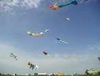
Ça fait une belle brochette de créatures marines...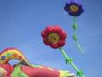
Eh bien, les voilà les fleurs originales (et bien gonflées, c'est pas si facile) qui attirent le regard des amoureux et même des autres.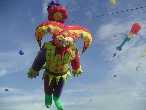
Le Gilles de Binche est vraiment une très belle réalisation dans tous les sens du terme, avec ses vrais grelots qui tintinnabulent (je sais, j'ai déjà employé le mot ailleurs, c'est bien, vous suivez !).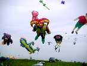
Le zoo se peuple de plus en plus...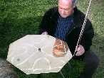
Au sol aussi, il se passe des choses. Joel a créé une plaque encore mieux que celles de Uli. Celle-ci est en laiton et vibre mieux que l'alu. Notez la position du pouce droit, fondamentale pour la réussite.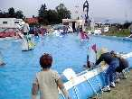
Un fondu a mis en place un bassin avec de splendides voiliers incassables (faut voir le traitement que les enfants leur infligent !). Et quand il n'y a pas de vent, c'est comme à Bercy, il y a des ventilos qui en font. Même que le chapeau de François a fait une petite croisière...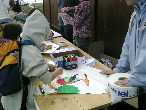
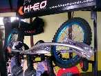
Pour les tractionnistes, un terrain est prévu plus loin, avec vue directe sur Clermont-Ferrand, mais ils préfèrent regarder en l'air, c'est sûrement des poètes.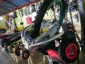
Un marchand propose cette splendide MountainBoard (en français, une planche à roulette mais avec 2 roues seulement, et des grandes, antidérapantes, qui permettent le tout-terrain).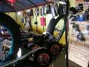
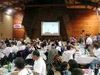
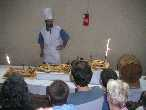
Le samedi soir, nouba au gymnase de Gergovie. Un mur d'escalade occupe le fond tout lambrissé en bois, ce qui met une ambiance plus chaleureuse que les murs de béton habituels. Des photos des Cervolix passés et présents sont projetées, ainsi que des vidéos. Un gateau fêtera les 10 ans de Cervolix.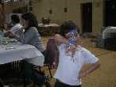
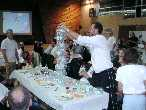
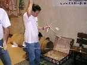
Nous aurons aussi une exhibition de "cacahuètes", ces petits avions indoor. Il faut une valise spéciale pour le transport, car ils sont extrêmement fragiles et seuls les propriétaires ont le droit d'y toucher. Au premier plan, remontage de l'élastique moteur.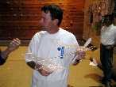
Ils sont bâtis en balsa et recouverts d'une peau transparente. Il paraît que les constructeurs font même la peau eux-mêmes. Le résultat : 1,2 grammes (sans l'élastique quand même...).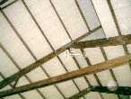
Et le moteur les entraîne jusqu'au plafond. Record du monde de durée : 35 mn dans les mines de sel de Pologne (y a de la place et pas de courant d'air). A Gergovie : quelques minutes, trop de portes ouvertes !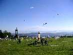
Dimanche matin, un temps splendide, avec un peu de brume dans les vallées pour rendre le paysage plus pittoresque. Du vent aussi, exactement comme il faut.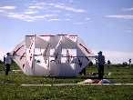
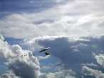
Attraction jamais vue (par moi), dans un ciel qui "se développe" comme disent les météos : un ULM Delta suspendu : c'est banal, me direz-vous ; oui, mais celui-ci emmène dans son sillage des oies qui l'accompagnent dans ses évolutions ! Paraît qu'elles renâclaient un peu hier à cause de la météo un rien maussade, mais aujourd'hui, ça va. C'est curieux, il passe d'abord tout seul, puis avec 4 oies, puis avec huit ! Quelqu'un doit les lancer en l'air !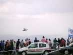
Au bout du plateau, les maquettes volantes télécommandées. Des bizzas comme en cerf-volant : ici une Stroumpfette pédale comme une forcenée tout en évoluant. Elle peut même faire des loopings.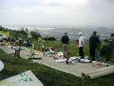
Où on revoit la Stroumpfette au sol, et le Schtroumpf qui s'échauffe sur la table. Notez la simplicité de la formule aérodynamique ! Mais il y a aussi de beaux avions très réalistes...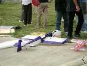
...comme ces chasseurs à la belle finition.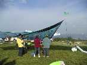
Au sol, l'équipe de Michel Trouillet a déployé son somptueux vélum.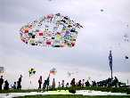
Ils mettront aussi en l'air pas mal de chose dont cette grande "bâche" qui a fait le tour du monde (voir AKA d'avril). Mais le Kraken de 1200 m de long ne volera pas faute de vent. Pourtant, Michel avait passé un NOTAM pour que les aviateurs s'écartent, et prévu un champ de 3 km de long dans la vallée ! Dommage...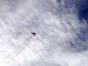
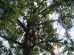
Comme d'habitude, faut que Gaby grimpe dans quelque chose...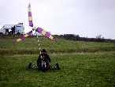
... ou fasse du char à cerf-volant, mais sans cerf-volant, avec une éolienne, et sans selle... Et je vous dis pas comme la suspension a souffert...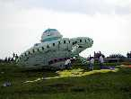
Les italiens ont amené leur énorme OVNI. Il se pose, un martien en sort (y a un truc).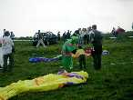
Il dit bonjour aux enfants...
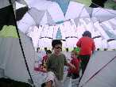
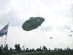
Enfin les enfants sortent, le martien remonte dans la soucoupe et elle re-décolle (y a un truc : le même à l'envers, si vous n'avez pas deviné)...
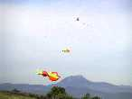
Après les oies, on a même vu voler des canards, d'une interprétation un peu surprenante...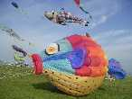
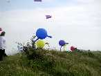
Et toujours les Neunoeils, en observation au bord de la vallée pour voir les ennemis arriver...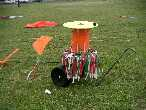
Un peu de technique, avec cet ensemble permettant de dérouler ou de ranger les arches avec une rapidité et une simplicité inégalée.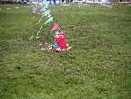
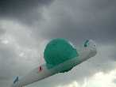
Après avoir volé en indoor à Brie-Comte-Robert, l'escargot peut respirer un peu plus largement ici.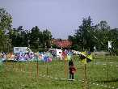
Malheureusement, dimanche après-midi, le vent tombe (et ne repart pas en sens inverse comme d'habitude ici !). Les moulins de Joel arrêtent de moudre "Vive le Vent"...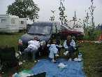
... et les courageuses femmes de cervolistes s'embêtent ferme (peut-être même qu'elles dorment ?).
Mais finalement, il y a quand même eu du beau monde en l'air ce week-end, non ?